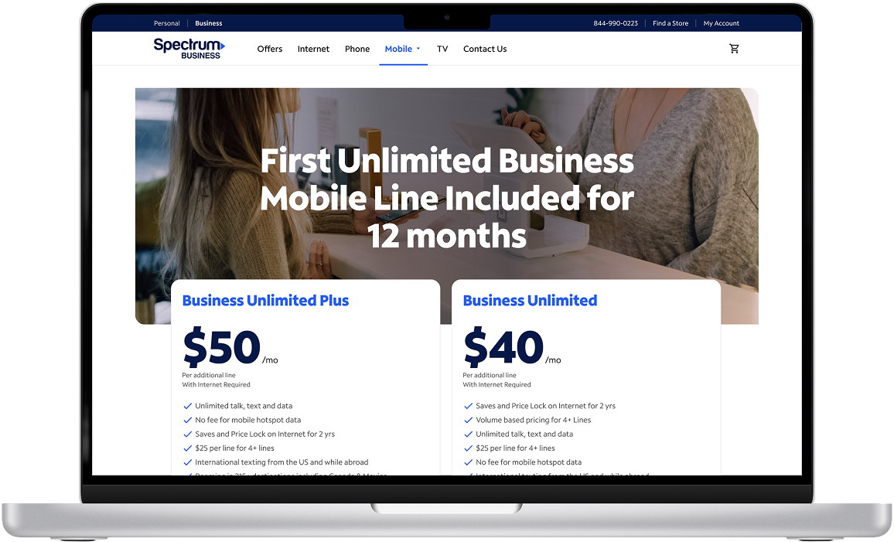
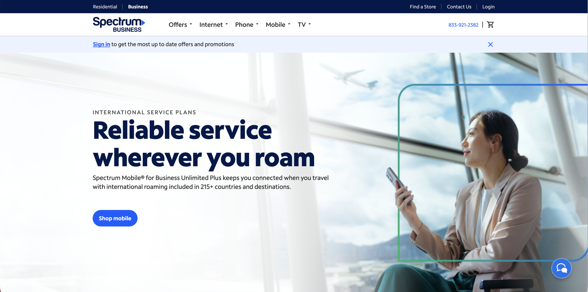
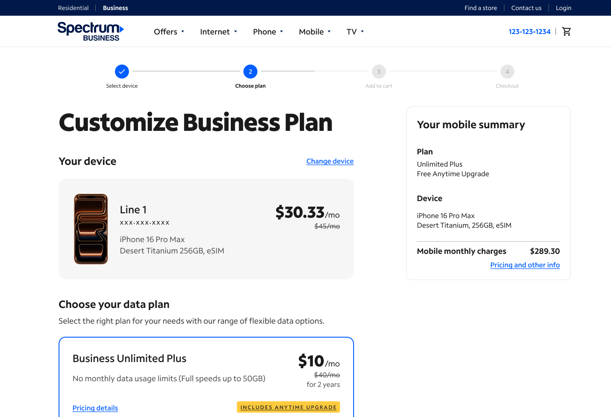
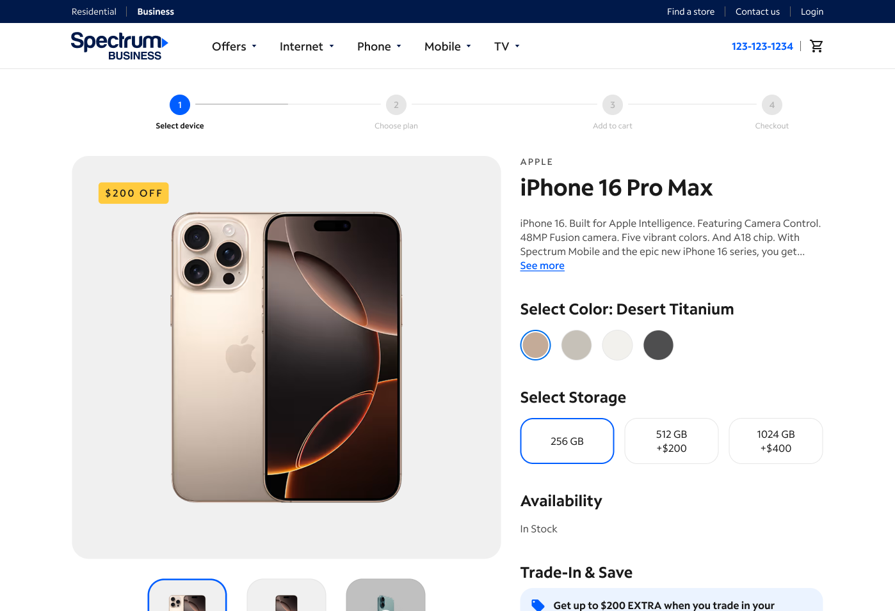
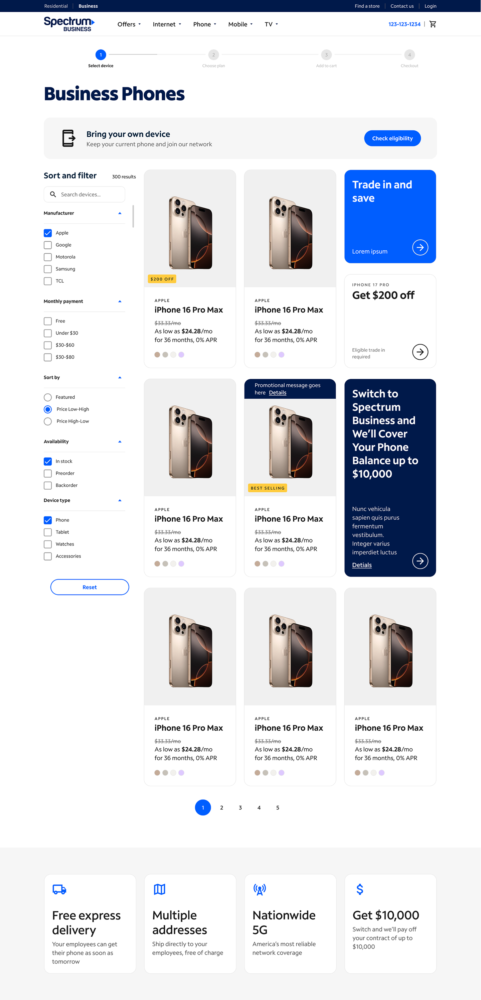
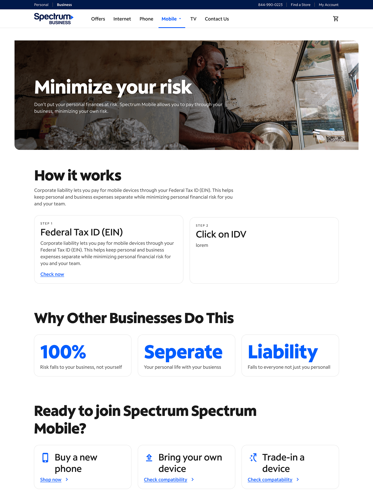
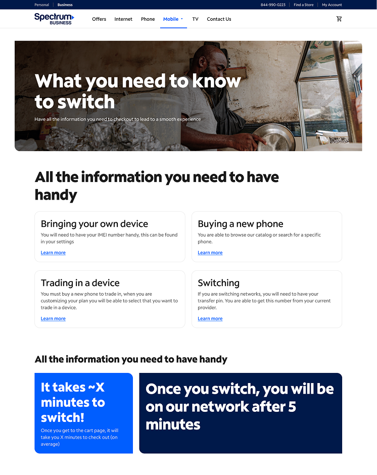
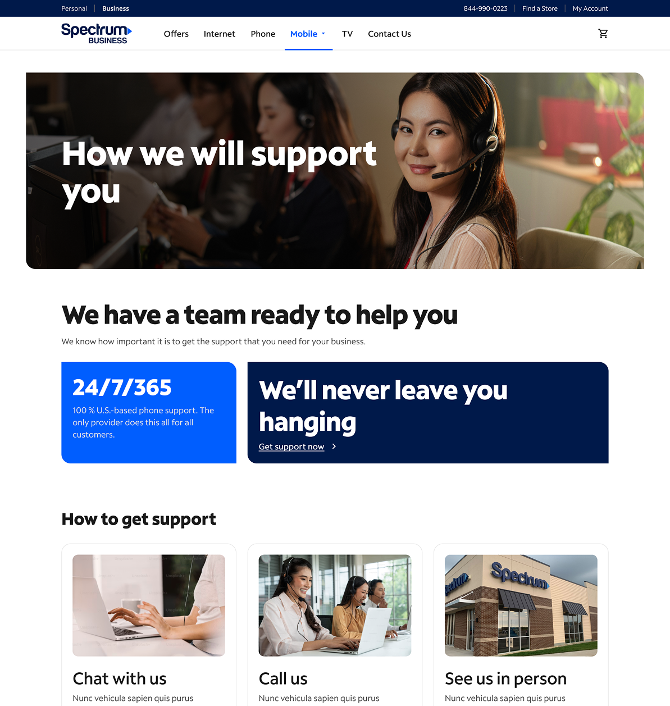

Product Designer owning the end-to-end experience for Spectrum Business Mobile, from product strategy through launch.
+13.7%+13.7%Orders in month one
+42.31%+42.31%Orders within three months

Industry
Telecommunications
Role
Product Designer / Strategy
Scope
0→1 B2B ecommerce experience
Team
Sole designer
My contribution
I was the sole designer on Spectrum Business Mobile. I owned the end-to-end experience for small businesses buying mobile service, from the learn pages through checkout, 0→1. I also wrote the Jira tickets that handed the designs to engineering, and the experience launched on the original planned timeline with no delays.
01 / OVERVIEW
Bringing the Business Mobile experience to life.
Spectrum Business customers needed a mobile shopping experience built around the way businesses actually buy. I owned the experience from product strategy through design execution and delivery, partnering with product, UX research, engineering, content, legal, and business stakeholders to bring the first dedicated Business Mobile journey to life.
02 / THE CHALLENGE
Small businesses were being sent through a residential buying experience.
Before launch, business customers had no dedicated way to learn about or buy Spectrum Mobile. After logging in, they were routed into the residential buyflow—an experience designed for individual consumers, not companies purchasing mobile service for their teams.
BeforeSmall business customer→Residential buyflow
OpportunitySmall business customer→Dedicated Business Mobile journey
Support business customers buying multiple lines.
Explain the Business Mobile offering.
Create a clearer path from product education to purchase.
The opportunityCreate a dedicated experience with the information, pricing clarity, and purchasing tools businesses need to confidently buy mobile service.
03 / MY APPROACH
Turning an ambiguous 0→1 opportunity into a shippable experience.
There wasn't an established Business Mobile ecommerce experience to build upon. I helped define what the experience should be, align stakeholders around requirements, and translate the opportunity into a journey teams could deliver.
01Product strategy and definitionDefining the opportunity, requirements, and experience direction.
Helped translate the business opportunity into product requirements and experience direction.
Identified gaps in the existing customer journey.
Worked with the Product Owner to define requirements and document work in Jira.
02Cross-functional collaborationAligning teams and navigating competing business and technical needs.
Partnered with Product, UX Research, Engineering, Content, Legal, and business stakeholders.
Navigated competing requirements and technical constraints.
Advocated for customer-centered solutions while balancing business and implementation needs.
03Design execution and deliveryTaking the experience from Figma through implementation and QA.
Designed the end-to-end experience in Figma, from the learn experience through checkout.
Worked through design decisions around pricing, multi-line purchasing, and shipping.
Supported QA and partnered with teams through delivery.
04 / KEY DESIGN DECISIONS
Designing around the realities of business customers.
DECISION 01 / PRICING
Making pricing clear without overwhelming the experience.
The challenge
Business customers could encounter different pricing depending on their signup date and network provider. We needed to communicate pricing details without making the experience feel cluttered.
My decision
Rather than repeat disclaimers throughout the experience, I advocated for a persistent sign-in ribbon that kept important pricing information visible.
Why it mattered
It created a consistent place for customers to reference important information without interrupting the shopping journey.
Different directions
One direction was to repeat pricing disclaimers at each step of the journey. I steered away from it because it would have cluttered the shopping experience, and landed on a persistent sign-in ribbon instead. There was pushback since it would have been easier to simply add disclaimers, but I was able to convince the team that trust was more important.

A persistent ribbon keeps offer guidance visible within the shopping journey.
DECISION 02 / MULTI-LINE SAVINGS
Making multi-line savings visible upfront.
The insight
Business customers often purchase multiple lines for their teams. Showing the value of those lines makes the experience relevant to the way businesses shop.
My decision
I designed a volume-discount experience on the homepage that surfaced potential savings directly, rather than making customers discover the value later.
Why it mattered
Customers could understand the benefit of adding lines earlier in their decision-making process.
Different directions
One direction was to show volume savings later, once customers were configuring lines. I put them on the homepage so customers see the value of adding lines before they commit effort.
The homepage surfaces potential savings for customers purchasing multiple lines.
DECISION 03 / MULTI-ADDRESS SHIPPING
Simplifying shipping for businesses with multiple locations.
The challenge
Business customers may need devices shipped to multiple addresses, and checkout had to work within backend address-validation constraints. Once validated, an address could not be edited.
My decision
I designed a multi-address shipping modal that let customers reuse previously validated addresses.
Why it mattered
This supported a real business purchasing need while working within the technical constraints of the existing system.
Different directions
Addresses couldn’t be edited once validated (back-end issue), so I had to ensure that the experience could still be seamless. I added a feature where the user could view the saved addresses, so they can ensure they are using the right one.
The shipping modal lets business buyers reuse validated addresses for multiple destinations.
05 / OUTCOMES
A dedicated experience with measurable business impact.
Orders increased following the launch of the dedicated Business Mobile experience. These are business outcomes after launch; the results are not attributed to any single design decision.
+13.7%+13.7%
Month-one increase in orders.
+42.31%+42.31%
Increase in orders within three months.
06 / WHAT'S NEXT
Turning funnel insights into the next round of improvements.
After launch, I used funnel data, research, and competitive benchmarks to identify opportunities to improve the experience further. I presented these recommendations to director-level leadership and added them to the product roadmap. They are proposed improvements, not shipped features.
PHASE 1Proposed improvementGive customers a clearer sense of progressHelp customers understand where they are in the purchasing journey and what comes next.
The goal was to reduce uncertainty, create structure, and help customers understand where they were in the purchasing process.
Comparable B2B research suggested a potential 3–8% lift in completed transactions after adding a four-step progress bar.
The cited test ran for 55 days with an estimated 10,000–15,000 visitors per variant.
Spectrum UX research supported the rationale around reducing uncertainty and building momentum.

Progress indicator at the Choose plan step.

Progress indicator at the Select device step.
PHASE 2Proposed improvementMake product discovery easierMake product specifications and comparisons easier for business customers to scan.

Baymard telecommunications benchmark research highlighted product-list and filtering issues. For products with detailed specifications, a list view could make comparisons easier to scan.
I explored how a list-based layout could make product specifications easier to compare and identified the bottom of the page as an opportunity for additional marketing content.
BAYMARD RESEARCH · POTENTIAL LEAD INCREASE4×
Potential increase in leads with effective filtering and comparison tools—not a Spectrum outcome.
Baymard also found poor-to-mediocre product-list UX on 58% of desktop and 78% of mobile ecommerce sites.
Product-list exploration gives specifications and comparisons more room.
PHASE 3Proposed improvementBuild confidence before customers purchaseGive customers the information they need before entering the purchase journey.
The goal was to help customers understand the offering, reduce uncertainty, and feel more confident moving into the purchase journey.
Minimize Your Risk
What You Need to Know to Switch
Support Spectrum Offers
These proposed pages give customers more information before asking them to make a purchasing decision.

Minimize Your Risk

What You Need to Know to Switch

Support Spectrum Offers
07 / REFLECTION
Designing for ambiguity meant balancing customer needs with what the business could deliver.
Building a new experience from the ground up meant navigating incomplete requirements, aligning stakeholders, and finding solutions that balanced customer needs, business goals, and technical constraints.
Next time, I would bring UX Research into the process earlier and prioritize educational content sooner. Dedicated learn pages could help customers understand the offering and build confidence before entering the purchase journey.
This project reinforced the importance of defining the experience, not just designing it—especially when creating something new within an established product ecosystem.